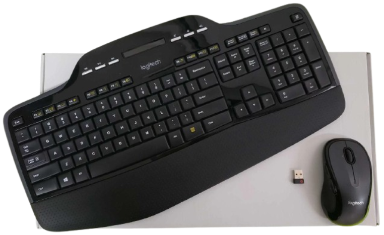
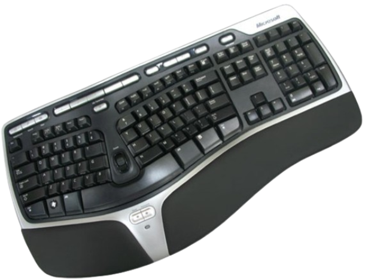
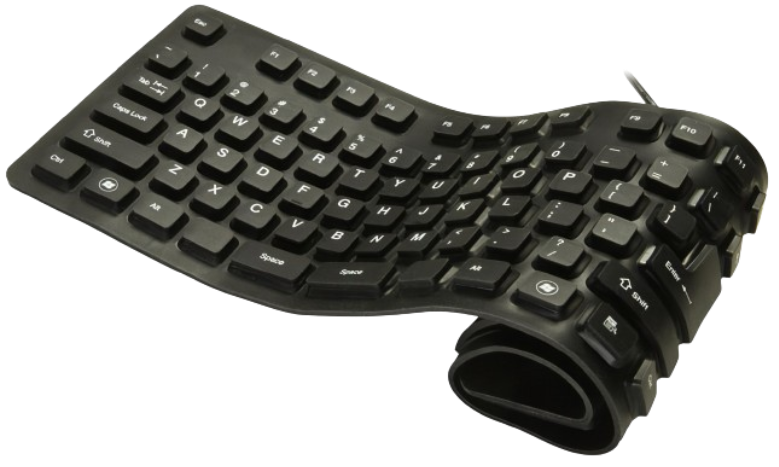
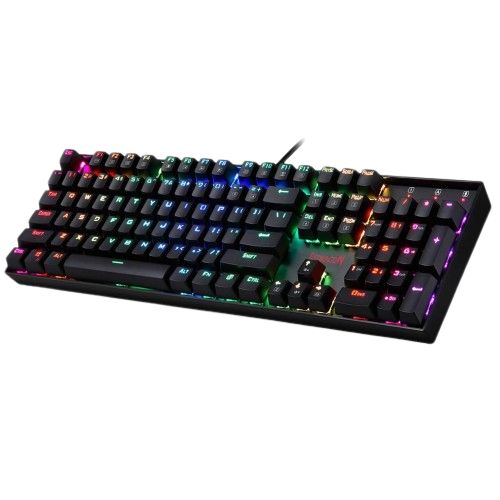
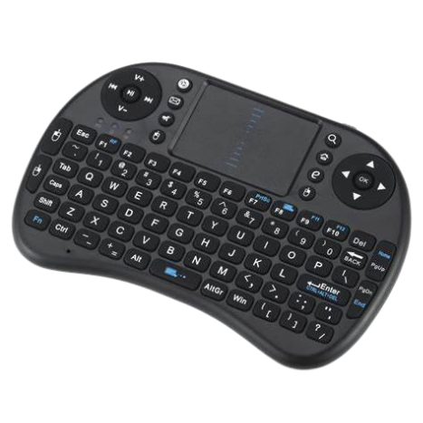

| Types of keyboard | Advantanges | Disadvantages |
|---|---|---|
| WIRELESS KEYBOARD  |
These keyboards help to keep your desk clutter-free and also more portable. Wireless keyboards are widely used with such portable devices such as smart phones and tablets or for devices such as the TV that may be a few feet away from where you are sitting, wireless keyboards are as much of a convenience as the remote control. | The downside however is that not many models are present in the market so it may limit your search. This would also mean that wireless keyboards are expensive. |
| ERGONOMIC KEYBOARD  | These keyboards are designed to reduce stress on muscles , to avoid Repetitive Strain Injury. It mostly deals with optimizing posture and technique while working so the work can be carried out in the easiest manner with the least possible strain on any muscle joint or organ. This is a radical type of keyboard designed to prevent Carpal Tunnel syndrome which causes numbness and tingling sensation in the hands and fingers after typing for a long duration. | The price of ergonomic keyboard is its biggest disadvantage, which is too expensive. Also, we may take time getting used to it. And using this will not solve all type of work place injuries. |
| ROLL-UP KEYBOARD  | Roll-up keyboards can be rolled up for easy travel and storage. They also tend to be waterproof due to material. They are flexible and more resistant to braking. | Frequent use of the roll-up keyboard can also easily wear down the keyboard, which means that it is not that durable in comparison to other types of keyboards. The roll-up keyboard is also not recommended for people with high wpm or words per minute. It is not advisable for people with high wpm because of its lackluster responsiveness. Some of the keypresses will not be recorded, which will slow down and aggravate the user. |
| GAMING KEYBOARD  | They include features to enhance gaming experience as well as provide convenient usage. For anyone serious about improving their gameplay experience and number of victories, a gaming keyboard is must. | Gaming Keyboards are more expensive than normal keyboards because of the mechanical switches. And also, they can be heavier and this is a downside if you like to travel and want the keyboard with you. |
| HANDHELD KEYBOARD  | With the flexibility of the small and wireless structure of the handheld keyboard, we can easily place it at any angle that provides for the most neutral hand and arm positioning. For example, we can type and control our TV or Computer while walking on a treadmill or can use them to completely replace our TV remote. When we want to travel somewhere, the handheld keyboard can easily be carried out in backpack, briefcase or even one’s pocket. | The handheld keyboards are smaller than the normal keyboards so this can limit the actions performed. |